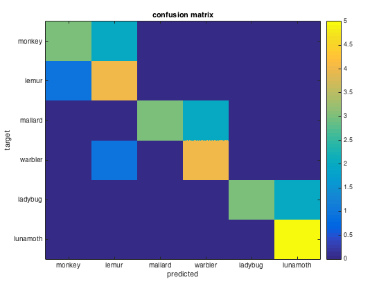

odd-even classification with LDA classifier
- For CoSMoMVPA's copyright information and license terms, #
- see the COPYING file distributed with CoSMoMVPA. #
Contents
Define data
config=cosmo_config(); data_path=fullfile(config.tutorial_data_path,'ak6','s01'); % Load the dataset with VT mask ds = cosmo_fmri_dataset([data_path '/glm_T_stats_perrun.nii'], ... 'mask', [data_path '/vt_mask.nii']); % remove constant features ds=cosmo_remove_useless_data(ds);
set sample attributes
ds.sa.targets = repmat((1:6)',10,1); ds.sa.chunks = floor(((1:60)-1)/6)'+1; % Add labels as sample attributes classes = {'monkey','lemur','mallard','warbler','ladybug','lunamoth'}; ds.sa.labels = repmat(classes,1,10)';
Part 1: bird classification; train on even runs, test on odd runs
%%%%%%%%%%%%%%%%%%%%%%%%%%%%%%%%%%%%%%%%%%%%%%%%%%%%%%%%%%%%%%%%%%%%%% % slice into odd and even runs using ds.sa.chunks attribute, and % store in new dataset structs called 'ds_even' and 'ds_odd'. % (hint: use the 'mod' function (remainder after division) to see which % chunks are even or odd) % >@@> even_msk = mod(ds.sa.chunks,2)==0; odd_msk = mod(ds.sa.chunks,2)==1; ds_even = cosmo_slice(ds,even_msk); ds_odd = cosmo_slice(ds,odd_msk); % <@@<
discriminate between mallards and warblers
categories={'mallard','warbler'};
% select samples where .sa.labels match on of the categories
% for the even and odd runs seperately. Slice the dataset twice and store
% the result in 'ds_even_birds' and 'ds_odd_birds'
% (use cosmo_match with .sa.labels and categories to define a mask,
% then cosmo_slice to select the data)
% >@@>
msk_even_birds=cosmo_match(ds_even.sa.labels,categories);
ds_even_birds=cosmo_slice(ds_even,msk_even_birds);
msk_odd_birds=cosmo_match(ds_odd.sa.labels,categories);
ds_odd_birds=cosmo_slice(ds_odd,msk_odd_birds);
% <@@<
% show the data
fprintf('Even data:\n')
cosmo_disp(ds_even_birds);
fprintf('Odd data:\n')
cosmo_disp(ds_odd_birds);
% train on even, test on odd
%
% Use cosmo_classify_lda to get predicted targets for the odd runs when
% training on the even runs, and assign these predictions to
% a variable 'test_pred'.
% (hint: use .samples and .sa.targets from ds_even_birds, and
% use .samples from ds_odd_birds)
% >@@>
train_samples=ds_even_birds.samples;
train_targets=ds_even_birds.sa.targets;
test_samples=ds_odd_birds.samples;
test_pred=cosmo_classify_lda(train_samples,train_targets,...
test_samples);
% <@@<
% >@@>
% Assign the real tagets of the odd runs to a variable 'test_targets'
test_targets=ds_odd_birds.sa.targets;
% <@@<
% show real and predicted labels
fprintf('\ntarget predicted\n');
disp([test_targets test_pred])
% compare the predicted labels for the odd
% runs with the actual targets to compute the accuracy. Store the accuracy
% in a variable 'accuracy'.
% >@@>
accuracy = mean(test_pred==test_targets);
% <@@<
fprintf('\nLDA birds even-odd: accuracy %.3f\n', accuracy);
% compare with naive bayes classification
% (hint: do classification as above, but use cosmo_classify_naive_bayes)
% >@@>
test_pred_nb=cosmo_classify_naive_bayes(train_samples,train_targets,...
test_samples);
test_targets=ds_odd_birds.sa.targets;
accuracy = mean(test_pred_nb==test_targets);
% <@@<
fprintf('\nNaive Bayes birds even-odd: accuracy %.3f\n', accuracy);
Even data:
.a
.vol
.mat
[ -3 0 0 121
0 3 0 -114
0 0 3 -11.1
0 0 0 1 ]
.xform
'scanner_anat'
.dim
[ 80 80 43 ]
.fdim
.labels
{ 'i'
'j'
'k' }
.values
{ [ 1 2 3 ... 78 79 80 ]@1x80
[ 1 2 3 ... 78 79 80 ]@1x80
[ 1 2 3 ... 41 42 43 ]@1x43 }
.sa
.targets
[ 3
4
3
:
4
3
4 ]@10x1
.chunks
[ 2
2
4
:
8
10
10 ]@10x1
.labels
{ 'mallard'
'warbler'
'mallard'
:
'warbler'
'mallard'
'warbler' }@10x1
.samples
[ 2.9 1.72 2.76 ... 4.16 2.56 2.95
1.89 1.37 3.05 ... 4.38 4.46 3.86
1.26 2.41 2.87 ... 1.96 3.74 3.34
: : : : : :
2.09 1.53 1.98 ... 3.21 2.94 4.08
2.13 1.22 2.12 ... 2.3 3.14 1.99
1.5 1.6 2.07 ... 0.491 1.1 1.78 ]@10x384
.fa
.i
[ 32 33 34 ... 28 29 29 ]@1x384
.j
[ 24 24 24 ... 25 25 26 ]@1x384
.k
[ 3 3 3 ... 9 9 9 ]@1x384
Odd data:
.a
.vol
.mat
[ -3 0 0 121
0 3 0 -114
0 0 3 -11.1
0 0 0 1 ]
.xform
'scanner_anat'
.dim
[ 80 80 43 ]
.fdim
.labels
{ 'i'
'j'
'k' }
.values
{ [ 1 2 3 ... 78 79 80 ]@1x80
[ 1 2 3 ... 78 79 80 ]@1x80
[ 1 2 3 ... 41 42 43 ]@1x43 }
.sa
.targets
[ 3
4
3
:
4
3
4 ]@10x1
.chunks
[ 1
1
3
:
7
9
9 ]@10x1
.labels
{ 'mallard'
'warbler'
'mallard'
:
'warbler'
'mallard'
'warbler' }@10x1
.samples
[ 1.3 0.646 0.591 ... 1.51 1.75 3.08
3.08 3.05 4.08 ... 1.88 2.26 2.92
2.13 2.69 2.99 ... 2.03 2.87 1.74
: : : : : :
1.47 0.507 1.87 ... 2.59 3.09 3.51
2.24 2.37 3.27 ... 4.61 2.13 4.32
1.36 1.31 1.52 ... 2.95 2.61 1.18 ]@10x384
.fa
.i
[ 32 33 34 ... 28 29 29 ]@1x384
.j
[ 24 24 24 ... 25 25 26 ]@1x384
.k
[ 3 3 3 ... 9 9 9 ]@1x384
target predicted
3 4
4 4
3 3
4 4
3 3
4 4
3 3
4 4
3 3
4 4
LDA birds even-odd: accuracy 0.900
Naive Bayes birds even-odd: accuracy 0.700
Part 2: all categories; train/test on even/odd runs and vice versa
%%%%%%%%%%%%%%%%%%%%%%%%%%%%%%%%%%%%%%%%%%%%%%%%%%%%%%%%%%%%%%%%%%%%%% % This is as above, but without slicing to get the samples with bird % species. In other words, just use 'ds_even' and 'ds_odd' % % First, train on even, test on odd % >@@> train_samples=ds_even.samples; train_targets=ds_even.sa.targets; test_samples=ds_odd.samples; test_pred=cosmo_classify_lda(train_samples,train_targets,test_samples); test_targets=ds_odd.sa.targets; accuracy = mean(test_pred==test_targets); % <@@< fprintf('\nLDA all categories even-odd: accuracy %.3f\n', accuracy); % Now train on odd, test on even % >@@> train_samples=ds_odd.samples; train_targets=ds_odd.sa.targets; test_samples=ds_even.samples; test_pred=cosmo_classify_lda(train_samples,train_targets,test_samples); test_targets=ds_even.sa.targets; accuracy = mean(test_pred==test_targets); % <@@< fprintf('\nLDA all categories odd-even: accuracy %.3f\n', accuracy);
LDA all categories even-odd: accuracy 0.767 LDA all categories odd-even: accuracy 0.733
Part 3: build confusion matrix
%%%%%%%%%%%%%%%%%%%%%%%%%%%%%%%%%%%%%%%%%%%%%%%%%%%%%%%%%%%%%%%%%%%%%% % manually build the confusion matrix for the six categories % first, allocate space for the confusion matrix nclasses=numel(classes); % should be 6 confusion_matrix=zeros(nclasses); % 6x6 matrix % sanity check to ensure targets are in range 1..6 assert(isequal(unique(test_targets),(1:6)')); % in confusion matrix, the i-th row and j-th column should contain % the number of times that a sample with test_targets==i was predicted as % test_pred==j. Use a nested for-loop (a for-loop in a for-loop) to count % this for all combinations of i (1 to 6) and j (1 to 6) % >@@> for predicted=1:nclasses for target=1:nclasses match_mask=test_pred==predicted & test_targets==target; match_count=sum(match_mask); confusion_matrix(target,predicted)=match_count; end end % <@@< % CoSMoMVPA can generate the confusion matrix using cosmo_confusion_matrix; % the check below ensures that your solution matches the one produced by % CoSMoMVPA confusion_matrix_alt=cosmo_confusion_matrix(test_targets,test_pred); if ~isequal(confusion_matrix,confusion_matrix_alt) error('your confusion matrix does not match the expected output'); end figure imagesc(confusion_matrix,[0 5]) title('confusion matrix'); set(gca,'XTick',1:nclasses,'XTickLabel',classes); set(gca,'YTick',1:nclasses,'YTickLabel',classes); ylabel('target'); xlabel('predicted'); colorbar